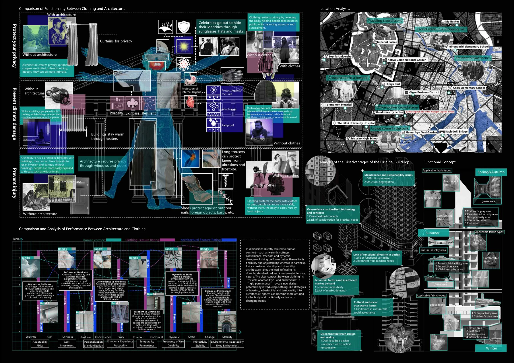
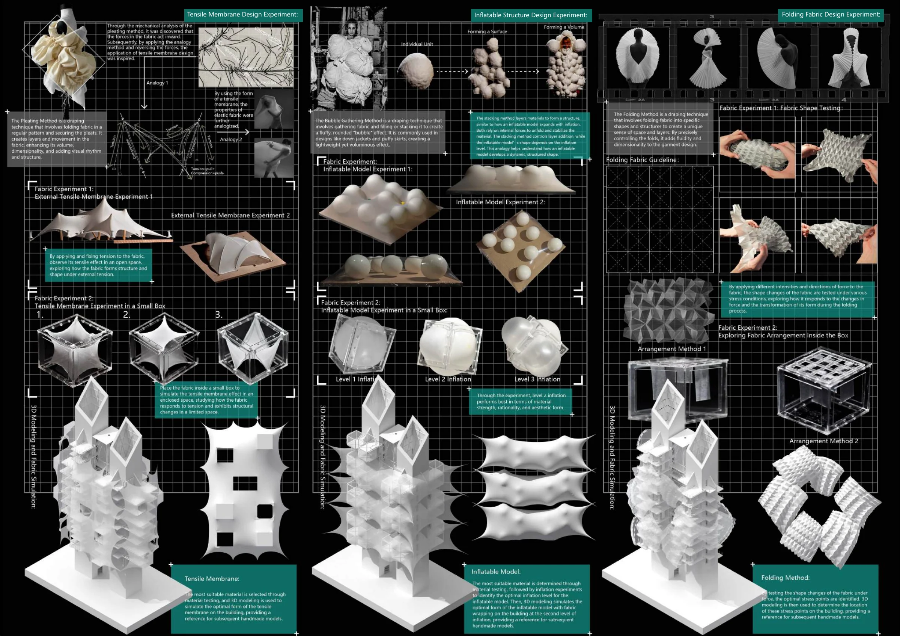
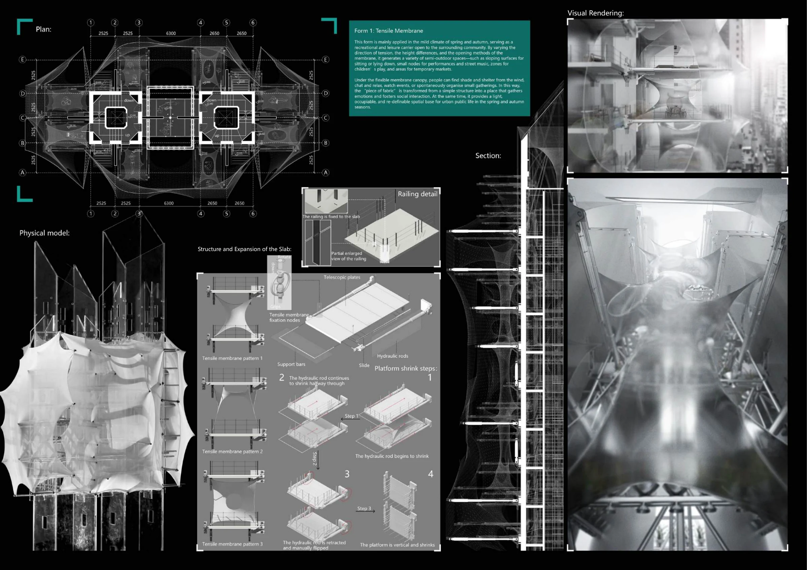
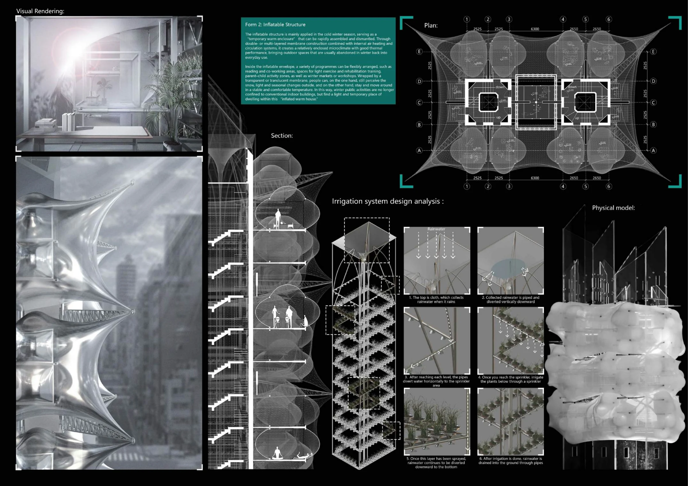
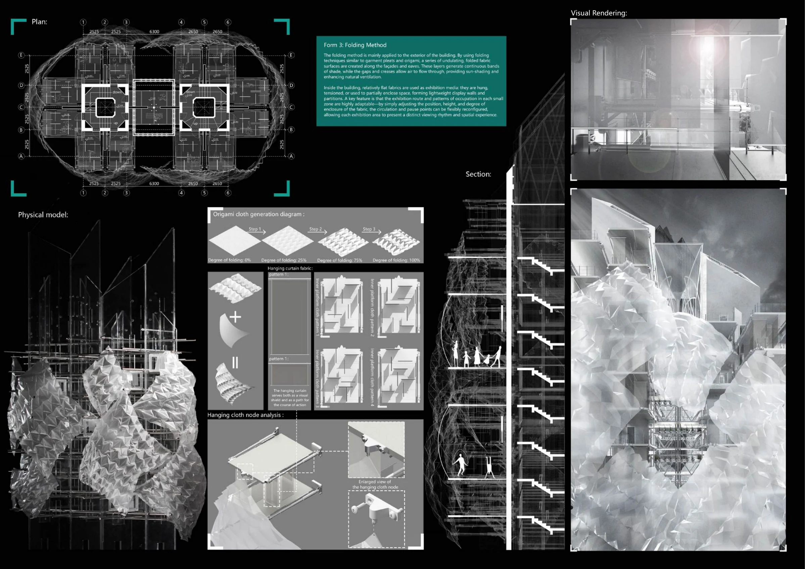

Capsule Reborn
胶囊重生
服装 × 建筑2025 / 个人项目
 查看主图
查看主图 让建筑像衣物一样，拥有变化的可能。
以中银胶囊塔为研究对象，将服装与建筑的性能进行对照，探索建筑从固定形态走向可调整空间的可能。通过布料实验与参数化模拟，把张拉、充气和折叠三种方式转化为建筑形态。
- 项目类型
- 个人项目 / 2025
- 本人工作
- 调研、概念设计、Rhino建模、Grasshopper布料模拟、实体模型与V-Ray渲染
- 使用工具
- Rhino / Grasshopper / V-Ray
发现问题
比较服装与建筑的相同点和差异，结合区位调研，分析胶囊塔的使用与更新问题。
实验与模拟
亲自完成布料实验、实拍记录和手工搭建，再通过Grasshopper探索布料形态。
空间表达
形成张拉膜、充气、折叠三类方案，以平剖面、结构拆解和效果图表达设计。
项目图纸与过程
点击图纸，查看大图。


查看大图

查看大图

查看大图

查看大图

查看大图